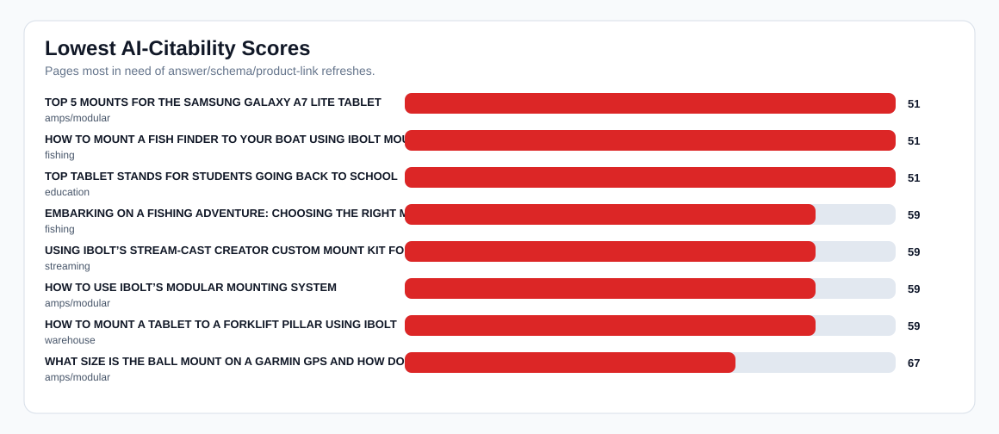
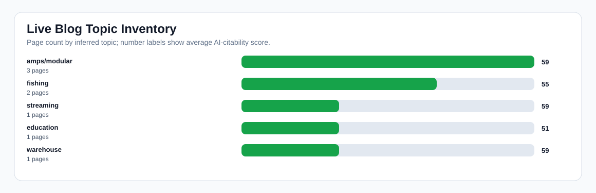

Live Blog AI-Citability Audit
Readout: The live blog has useful coverage, but pages need more quote-ready answer blocks, FAQ/schema, direct product links, and comparison language to increase AI mentions and citations.
Pages audited
8
Avg score
57
No FAQ schema
8
No Article schema
0
No product links
0
No quick answer
8
No comparison language
7
Charts


Lowest-Scoring Pages
| Score | Title | Topic | Product links | FAQ schema | Article schema | Top fix |
|---|---|---|---|---|---|---|
| 51 | TOP 5 MOUNTS FOR THE SAMSUNG GALAXY A7 LITE TABLET | amps/modular | 12 | no | yes | Add FAQ section and FAQ schema for AI-readable Q&A. |
| 51 | HOW TO MOUNT A FISH FINDER TO YOUR BOAT USING IBOLT MOUNTS | fishing | 12 | no | yes | Add FAQ section and FAQ schema for AI-readable Q&A. |
| 51 | TOP TABLET STANDS FOR STUDENTS GOING BACK TO SCHOOL | education | 12 | no | yes | Add FAQ section and FAQ schema for AI-readable Q&A. |
| 59 | EMBARKING ON A FISHING ADVENTURE: CHOOSING THE RIGHT MOUNT FOR YOUR FISH FINDER | fishing | 12 | no | yes | Add FAQ section and FAQ schema for AI-readable Q&A. |
| 59 | USING IBOLT’S STREAM-CAST CREATOR CUSTOM MOUNT KIT FOR MULTIPLE ANGLE SHOTS | streaming | 14 | no | yes | Add FAQ section and FAQ schema for AI-readable Q&A. |
| 59 | HOW TO USE IBOLT’S MODULAR MOUNTING SYSTEM | amps/modular | 12 | no | yes | Add FAQ section and FAQ schema for AI-readable Q&A. |
| 59 | HOW TO MOUNT A TABLET TO A FORKLIFT PILLAR USING IBOLT | warehouse | 12 | no | yes | Add FAQ section and FAQ schema for AI-readable Q&A. |
| 67 | WHAT SIZE IS THE BALL MOUNT ON A GARMIN GPS AND HOW DO I FIND A COMPATIBLE MOUNT? | amps/modular | 16 | no | yes | Add FAQ section and FAQ schema for AI-readable Q&A. |